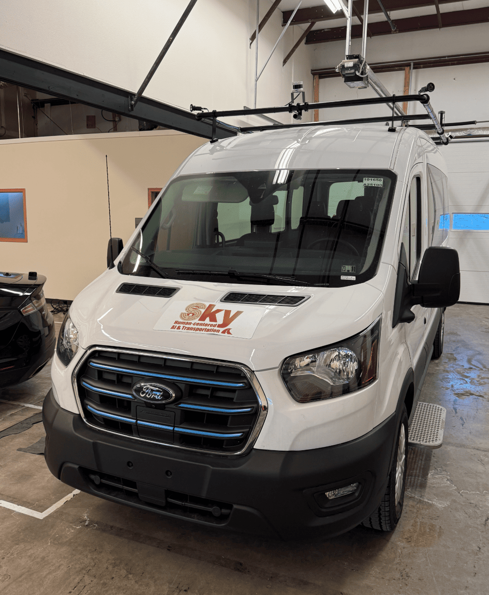
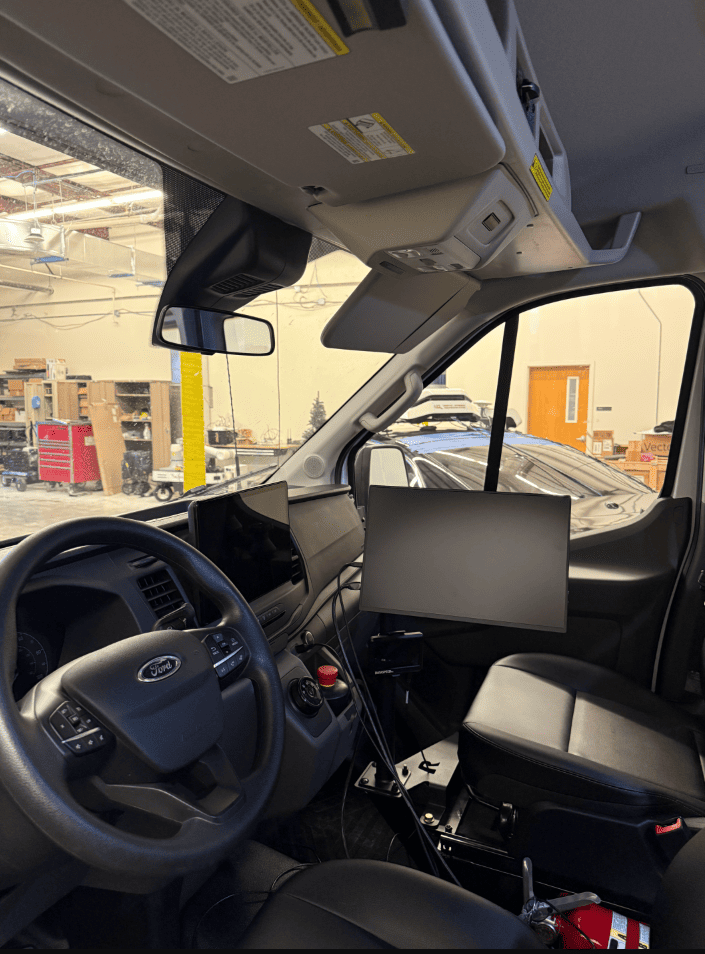
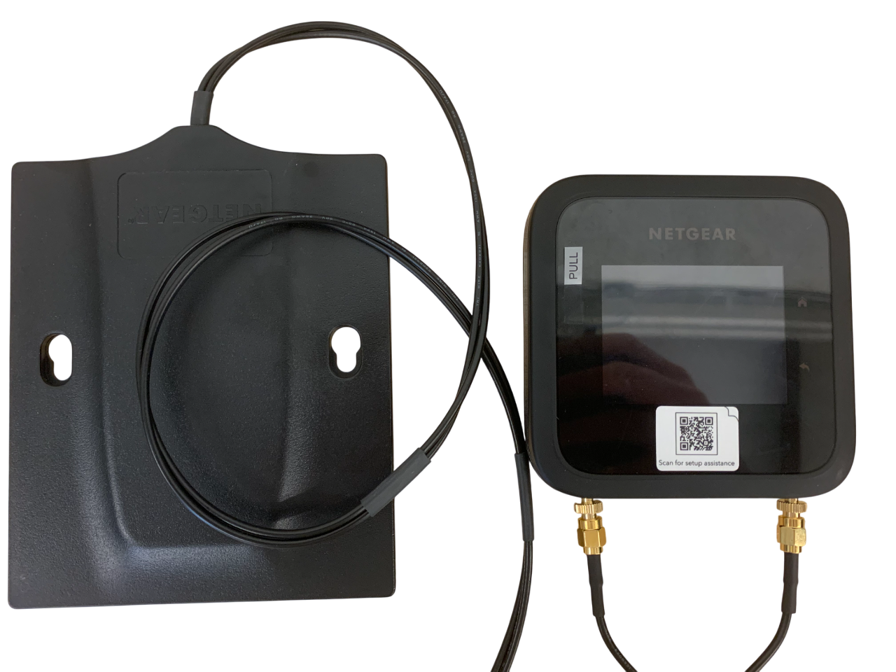

"HAL 9000 made the 'logical' choice—to kill the crew." This moment from 《2001: A Space Odyssey》 reveals a chilling truth: AI without alignment or trust can be dangerous. My research vision is to give technology a HEART: developing human-centered and trustworthy autonomous systems that truly understand, adapt to, and collaborate with humans. This is the key to building a future transportation systems where humans and AI-powered agents coexist in harmony.
The research presented on this page represents the collective effort and dedication of my exceptional team. None of these ambitious ideas could have been transformed into reality without their invaluable contributions, creativity, and unwavering commitment. I am deeply grateful for their collaborative spirit and the synergy that makes our vision possible.
1. Simulation Platform & Dataset
1.1 Sky-Drive: Multi-Agent Interaction
Existing simulators primarily focus on either optimizing traffic flow efficiency or validating single-vehicle performance, lacking comprehensive support for distributed multi-agent interactions. To address this gap, my team and I have developed Sky-Drive, a novel distributed multi-agent simulation platform that enables synchronized, human-AI collaborative driving research. Sky-Drive integrates Unreal Engine, CARLA, ROS, WebSocket, and custom scenario generation pipelines through a distributed architecture that supports synchronized simulation across multiple terminals. It enables real-time behavior modeling of pedestrians, human-driven vehicles (HVs), and autonomous vehicles (AVs), along with collaborative testing where multiple researchers can observe and intervene from different perspectives. Sky-Drive provides a comprehensive Human/Hardware-in-the-Loop (HiL) setup for immersive simulation and behavioral analysis. This setup includes specialized equipment to create a realistic and data-rich testing environment:
- VR Headsets: The HTC Vive Pro Eye (with eye-tracking) and Meta Quest Pro are used to create immersive experiences and explore new possibilities in human-AI-machine interaction.
- Human/Hardware-in-the-Loop (HiL) System: This system enables researchers to test and validate control systems, algorithms, and human-machine interfaces in a safe and controlled environment. By integrating hardware components and human input into the loop, researchers can evaluate the performance and reliability of their designs under realistic conditions.
- Synchronization and Driving with Racing Wheel & Pedals: This enhances the realism of driving simulations and is designed to synchronize the simulation with the remote driving of our real-world autonomous van, allowing for more accurate studies of human behavior and interaction in vehicle-related research.
My team and I are conducting the Sky-Drive Demo: distributed, multi-agent VR experiment.
Sky-Drive overview.
Safety-Critical Scenario: Right Turn Conflict.
Safety-Critical Scenario: Nearside Conflict.
Safety-Critical Scenario: Left Turn Conflict.
Safety-Critical Scenario: Farside Conflict.
2. Human-centered AI Algorithm
2.1 Imitation Learning Pretraining
2.2 Closed-loop Post-Training: VLM, RL and WM
2.3 Human-in-the-loop Adaptation
3. Real-world Testing & Evaluation
3.1 Real-World Autonomous Driving Testbed
While simulation provides a safe and scalable environment for algorithm development, the sim-to-real gap remains a fundamental challenge. I am dedicated to transferring our developed human-centered AI algorithms to real-world environments to validate their effectiveness and robustness. Our primary platform is an electric Ford E-Transit van retrofitted with a complete autonomous driving stack: a drive-by-wire system, multi-modal sensor suite (e.g., 3 LiDARs, 7 cameras, and radars), 5G connectivity via NETGEAR Nighthawk M6 Pro, and high-performance onboard computing (RTX A6000). We have also deployed portable roadside units (Siemens RSUs, Cohda MK6C OBU) and traffic signals that can be configured to create customizable traffic scenarios at intersections and along corridors. This integrated Cyber-Physical Systems (CPS) testbed, combined with high-performance Lambda Servers that our team possesses, featuring multiple NVIDIA GPUs (RTX PRO 6000, A6000, 4090, and 4080), enables comprehensive testing of human-centered AI algorithms in real traffic conditions.

Autonomous Van with Sensor Suite

Driver Cockpit and Control Interface

Computing Hardware and Sensor Integration

Portable Traffic Light

Testbed

Sensor Configuration

V2X experiment equipment

5G mmWave Mobile Hotspot
3.2 End-to-End Driving Policy Testing and Refinement
To validate the effectiveness of designed end-to-end (E2E) algorithms in real-world scenarios, my team and I deploy these models onto our lab-developed autonomous van for systematic testing and iterative refinement. Real-time sensor data streams from our multi-modal perception suite (LiDAR, cameras, and radar) are fed into these E2E models, which output steering, throttle, and brake commands at 20Hz, enabling smooth vehicle control. Through extensive real-world testing on public roads and our campus testbed, we continuously collect performance data and edge cases that inform model improvements.
Live demo at 2025 AAA Safe Mobility Conference, Madison, WI.
End-to-end autonomous driving in urban and rural environments (McKee Road, Madison).
3.3 Remote Vehicle Operations and Cloud-Based AI Deployment
Deploying VLMs and complex AI algorithms directly on vehicle computer hardware faces significant computational constraints. To address this limitation, my team and I designed a complete remote operations (teleoperation) platform for our autonomous van. Leveraging its 5G connectivity, the vehicle can be controlled in real time for driving, operation, and data collection from any location with an internet connection, such as a conference room or an off-site lab (see video examples below). More importantly, our platform is designed for remote AI model deployment. This enables a powerful hardware-in-the-loop workflow: real-time sensor data is streamed from the vehicle to a local computer or a cloud service like Amazon Web Services (AWS), where AI models can process the data and transmit control commands back to the vehicle for immediate execution.
Prof. Chen remote driving from the office. The van can be seen passing the window on the right at 0:02 and 0:42.
My team and I testing remote driving function with Logitech G920 Racing Wheel and Pedals. Full video on YouTube.